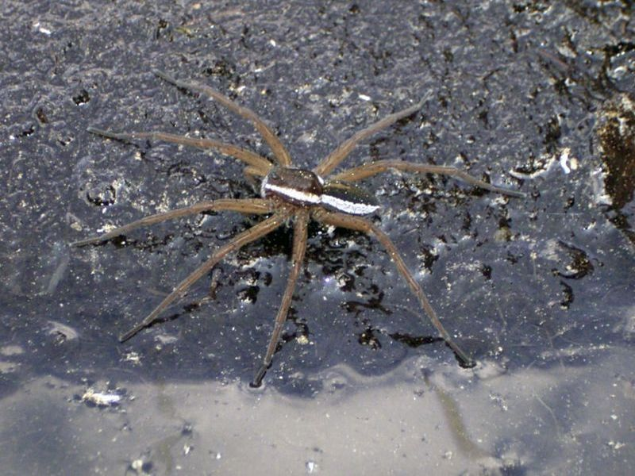

Jagdspinne
Dolomedes fimbriatus
Die Gerandete Jagdspinne gilt mit einer Körperlänge von bis zu 2 cm als größte heimische Spinnenart. Sie lebt im Uferbereich unserer Moorgewässer und erbeutet dort Wassertiere bis hin zu kleinen Fischen.
Die auch im Pfrunger Ried recht seltene Dolomedes wurde auf der Roten Liste als „gefährdet" eingestuft.